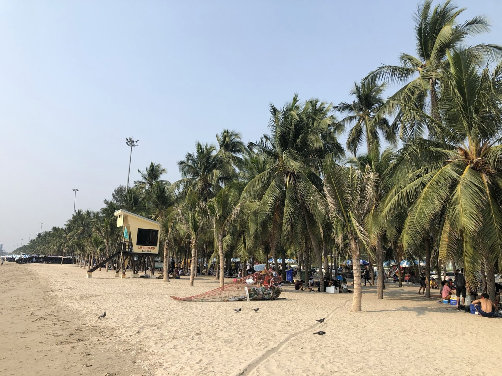
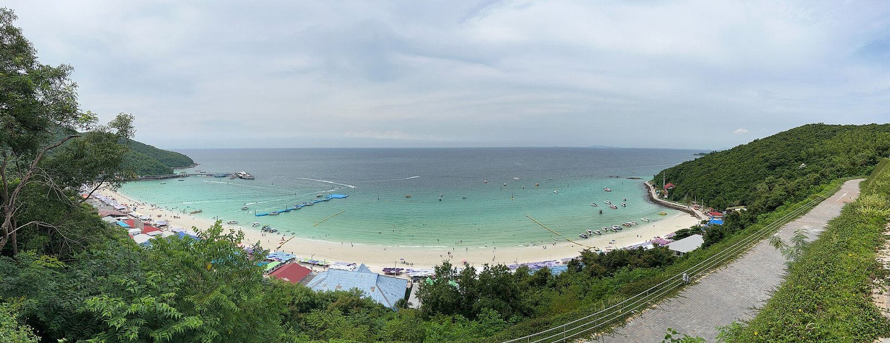
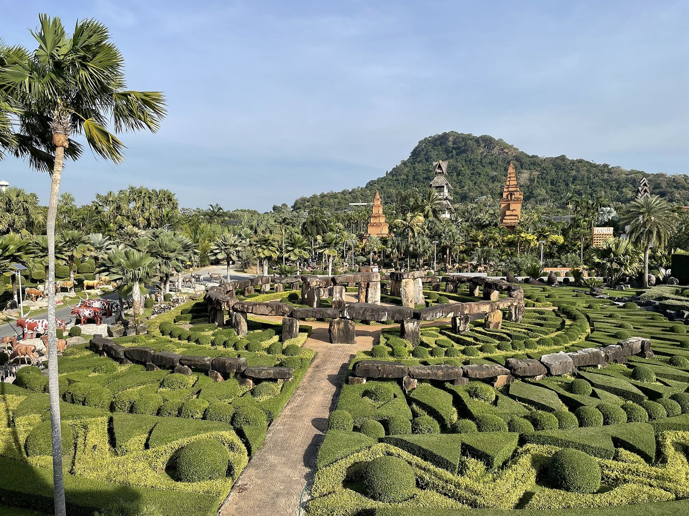
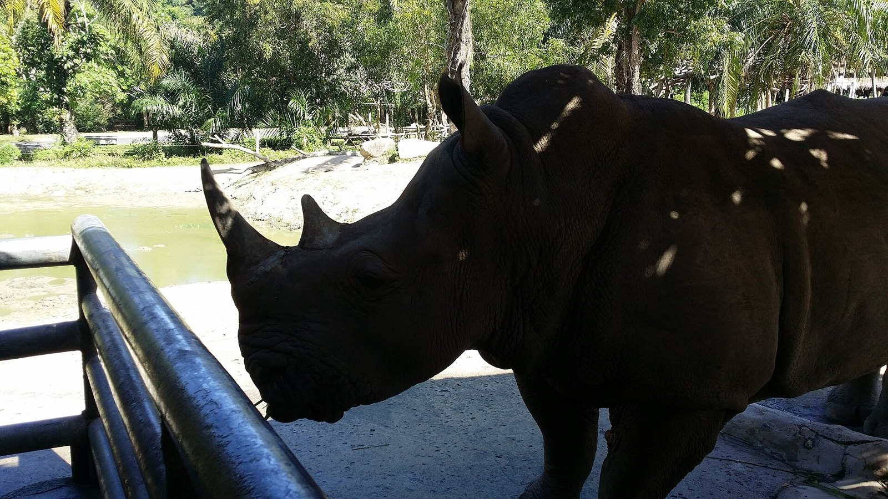
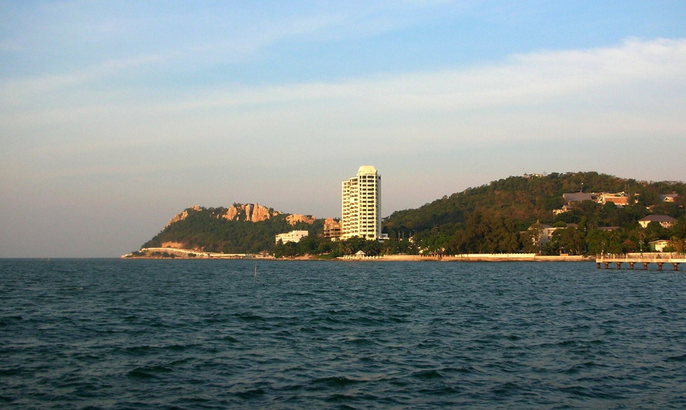
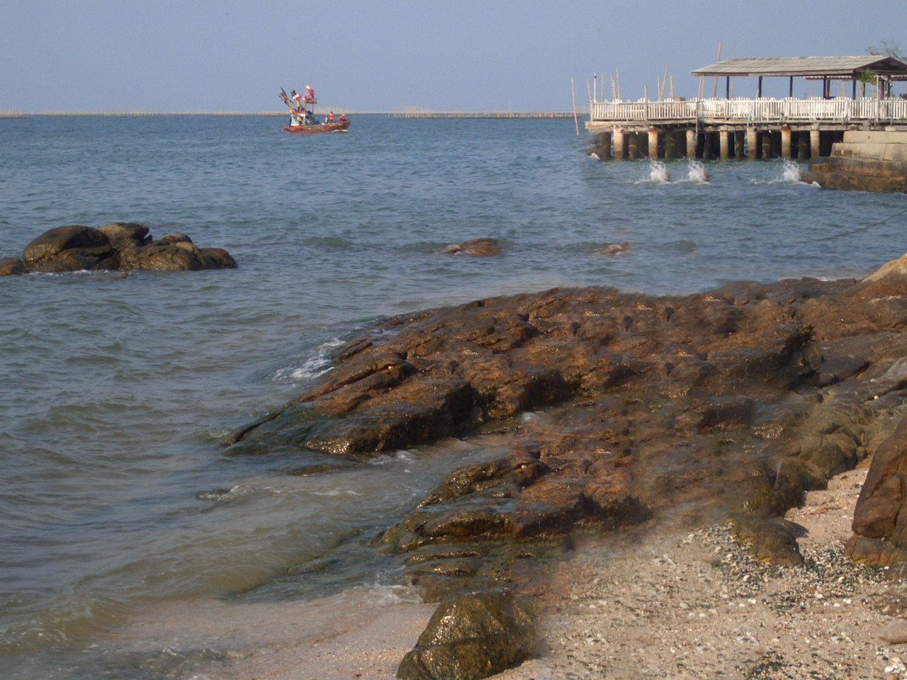
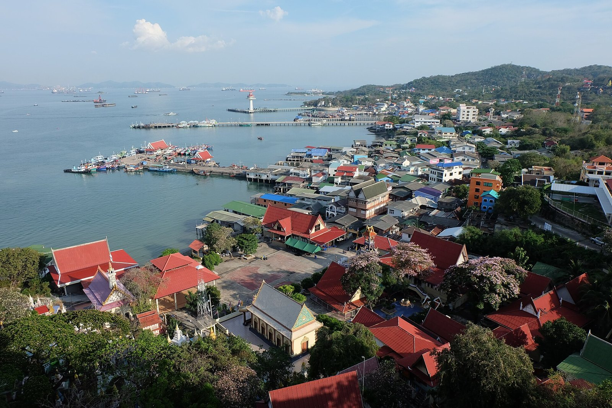

หาดบางแสน
หาดบางแสน
ผู้ถ่าย: Slyronit
ชื่อภาพ: File:Bang Saen Beach 01.jpg
หน้าต้นฉบับ Wikimedia Commons ↗
CC BY-SA 4.0
ปรับขนาด บีบอัด และแสดงภาพแบบครอปตามพื้นที่ ภาพที่เป็น CC BY-SA ยังคงเผยแพร่ภายใต้สัญญาอนุญาตเดิม
PHOTOGRAPHY CREDITS
ภาพจาก Wikimedia Commons ระบุผู้ถ่าย แหล่งที่มา และสัญญาอนุญาตของแต่ละภาพ ภาพถ่ายเป็นบันทึกในช่วงเวลาหนึ่ง สภาพสถานที่ปัจจุบันอาจเปลี่ยนไป
ภาพอ่างศิลาเป็นชายฝั่งในย่านอ่างศิลา ไม่ใช่ภายในตลาด ส่วนตลาดหนองมนยังไม่มีภาพถ่ายที่ยืนยันแหล่งที่มาและสิทธิ์ใช้งาน จึงแสดงชื่อสถานที่แทนภาพ

หาดบางแสน
ผู้ถ่าย: Slyronit
ชื่อภาพ: File:Bang Saen Beach 01.jpg
หน้าต้นฉบับ Wikimedia Commons ↗
CC BY-SA 4.0
ปรับขนาด บีบอัด และแสดงภาพแบบครอปตามพื้นที่ ภาพที่เป็น CC BY-SA ยังคงเผยแพร่ภายใต้สัญญาอนุญาตเดิม

เกาะล้าน
ผู้ถ่าย: Stefan Fussan
ชื่อภาพ: File:Tawaen Beach, Ko Lan 0001.jpg
หน้าต้นฉบับ Wikimedia Commons ↗
CC BY-SA 3.0
ปรับขนาด บีบอัด และแสดงภาพแบบครอปตามพื้นที่ ภาพที่เป็น CC BY-SA ยังคงเผยแพร่ภายใต้สัญญาอนุญาตเดิม

สวนนงนุช
ผู้ถ่าย: Christoph Jackel (WMDE)
ชื่อภาพ: File:Overview Nong Nooch Botanical Garden.jpg
หน้าต้นฉบับ Wikimedia Commons ↗
CC BY 4.0
ปรับขนาด บีบอัด และแสดงภาพแบบครอปตามพื้นที่ ภาพที่เป็น CC BY-SA ยังคงเผยแพร่ภายใต้สัญญาอนุญาตเดิม

แรดในสวนสัตว์เปิดเขาเขียว
ผู้ถ่าย: Yellow man
ชื่อภาพ: File:Rhino in khao kheow open zoo - panoramio.jpg
หน้าต้นฉบับ Wikimedia Commons ↗
CC BY 3.0
ปรับขนาด บีบอัด และแสดงภาพแบบครอปตามพื้นที่ ภาพที่เป็น CC BY-SA ยังคงเผยแพร่ภายใต้สัญญาอนุญาตเดิม

เขาสามมุข
ผู้ถ่าย: Xufanc
ชื่อภาพ: File:Khao Sam Muk18.JPG
หน้าต้นฉบับ Wikimedia Commons ↗
CC BY-SA 3.0
ปรับขนาด บีบอัด และแสดงภาพแบบครอปตามพื้นที่ ภาพที่เป็น CC BY-SA ยังคงเผยแพร่ภายใต้สัญญาอนุญาตเดิม

บรรยากาศชายฝั่งย่านอ่างศิลา
ผู้ถ่าย: silaporn
ชื่อภาพ: File:ทะเล อ่างศิลา เชิญแวะเที่ยว ตลาดเก่าอ่างศิลา - panoramio.jpg
หน้าต้นฉบับ Wikimedia Commons ↗
CC BY 3.0
ปรับขนาด บีบอัด และแสดงภาพแบบครอปตามพื้นที่ ภาพที่เป็น CC BY-SA ยังคงเผยแพร่ภายใต้สัญญาอนุญาตเดิม

ทิวทัศน์ชุมชนเกาะสีชัง
ผู้ถ่าย: JingJun
ชื่อภาพ: File:Town of Amphoe Ko Sichang.jpg
หน้าต้นฉบับ Wikimedia Commons ↗
CC0
ปรับขนาด บีบอัด และแสดงภาพแบบครอปตามพื้นที่ ภาพที่เป็น CC BY-SA ยังคงเผยแพร่ภายใต้สัญญาอนุญาตเดิม